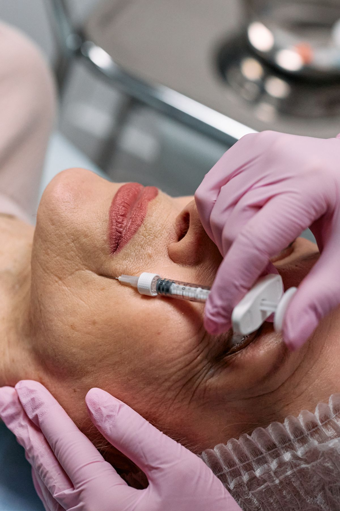

فیلر بادی — فرمدهی باسن
فرمدهی و حجمدهی باسن با فیلر بادی، بدون جراحی؛ میزان فیلر و طرح فرمدهی در جلسه مشاوره و بر اساس فرم بدن شما مشخص میشود.
دکتر آرزو جباری، پزشک در تهران با تجربه گسترده و تخصصی در فیلر بادی — فرمدهی باسن و سینه بدون جراحی؛ در کنار آن، تزریق فیلر صورت، بوتاکس، مزوتراپی و جوانسازی پوست در دو مطب جردن و سعادتآباد. نوبتتان را همینجا، آنلاین رزرو کنید.

تمرکز اصلی دکتر جباری فرمدهی بدن با فیلر بادی است — بدون جراحی. خدمات تزریقی و مراقبتی صورت هم با همان دقت و بر اساس فرم طبیعی بدن و چهره شما انجام میشود.
فرمدهی و حجمدهی باسن با فیلر بادی، بدون جراحی؛ میزان فیلر و طرح فرمدهی در جلسه مشاوره و بر اساس فرم بدن شما مشخص میشود.

فرمدهی سینه با فیلر بادی و بدون جراحی؛ روشی تزریقی که جزئیات آن — از مناسببودن برای شما تا میزان فیلر — در جلسه مشاوره بررسی میشود.

تزریق فیلر برای لب، گونه، چانه، خط خنده و زیر چشم؛ با هدف حفظ تناسب طبیعی چهره و بدون تغییر اغراقآمیز.

تزریق بوتاکس برای کاهش ظاهر خطوط حرکتی صورت، مثل خطوط پیشانی و دور چشم؛ میزان و نقاط تزریق در جلسه مشاوره مشخص میشود.

مزوتراپی صورت و مو با ترکیبات مغذی و آبرسان که به لایههای سطحی پوست تزریق میشود تا کیفیت و شادابی پوست بهتر شود.
درمانهای جوانسازی برای بهبود کیفیت، شفافیت و قوام پوست؛ روش مناسب بر اساس شرایط پوست شما در جلسه مشاوره پیشنهاد میشود.
تزریق چربی برای حجمدهی طبیعی، و فیشیال و پاکسازی حرفهای پوست برای شادابی و آمادهسازی پوست؛ هر دو پس از بررسی در جلسه مشاوره.

دکتر جباری تجربه گسترده و تخصصی خود را روی فیلر بادی متمرکز کرده است: فرمدهی باسن و سینه بدون جراحی، با طرحی که برای بدن خودتان طراحی میشود — نه یک قالب یکسان برای همه.
فرمدهی باسن و سینه بدون جراحی، حوزه اصلی و تخصصی کار دکتر جباری است؛ نمونهکارها را در اینستاگرام مطب میتوانید ببینید.
فرمدهی با تزریق انجام میشود؛ بدون بیهوشی و برش جراحی. جزئیات و مناسببودن روش برای شما در جلسه مشاوره روشن میشود.
پیش از هر تزریق، فرم بدن و چهره و شرایط شما بررسی میشود و روش مناسب برای خودتان پیشنهاد میشود؛ برای شروع مشاوره کافی است در واتساپ یا دایرکت پیام بدهید.
مطب جردن (بلوار میرداماد) و مرکز پزشکی تهران در سعادتآباد (سرو شرقی)؛ هرکدام برایتان نزدیکتر است، همانجا نوبت بگیرید.
از فضای آرام و روشن مطب تا جزئیات درمانهای زیبایی؛ تصاویری از محیط و روند کار در مطبهای زیبایی مدرن.


آنلاین از همین سایت، در واتساپ یا با یک تماس؛ برای مطب جردن یا سعادتآباد، هرکدام که نزدیکتر است.
در جلسه مشاوره، فرم بدن و چهره شما بررسی میشود و روش مناسب و مراحل کار به زبان ساده توضیح داده میشود.
اقدام انتخابشده — از فیلر بادی تا بوتاکس و مزوتراپی — طبق همان طرحی انجام میشود که در مشاوره بر سر آن توافق شده است.
بعد از کار، نکات مراقبتی گفته میشود و برای کنترل روند بهبود، در کنار شما هستیم.
سه راه دارید: فرم رزرو آنلاین همین صفحه، ارسال پیام در واتساپ به شماره ۰۹۰۲۹۳۸۳۴۹۱، یا تماس با همین شماره. بعد از ثبت درخواست، برای هماهنگی ساعت دقیق با شما تماس میگیریم.
مطب جردن: تهران، جردن، بلوار میرداماد، نرسیده به خیابان ولیعصر، روبروی دانشکده خواجه نصیرالدین طوسی، ساختمان ۳۴۹، طبقه ۱۳. مرکز پزشکی تهران: سعادتآباد، سرو شرقی، کوچه سوم، پلاک ۱، واحد ۲. تلفن مطب جردن: ۰۲۱۸۸۱۹۲۵۴۶.
یعنی فرمدهی و حجمدهی نواحی بدن — مثل باسن و سینه — با تزریق فیلر انجام میشود، بدون برش و بیهوشی جراحی. اینکه این روش برای بدن شما مناسب است یا نه، در جلسه مشاوره مشخص میشود.
بله. پیش از هر اقدام، در جلسه مشاوره فرم بدن و چهره و شرایط شما بررسی میشود تا روش مناسب — و میزان و نقاط تزریق — برای خودتان مشخص شود.
ماندگاری به نوع درمان، ناحیه تزریق و شرایط بدن هر فرد بستگی دارد و در جلسه مشاوره درباره آن صحبت میشود. هیچ نتیجهای را نمیتوان برای همه افراد یکسان تضمین کرد.
فرم را پر کن؛ برای هماهنگی ساعت مراجعه با تو تماس میگیریم. اگر ترجیح میدهی در واتساپ صحبت کنیم، از دکمه زیر پیام بده یا مستقیم تماس بگیر:
۰۹۰۲ - ۹۳۸ ۳۴۹۱ واتساپ مطب: ۰۹۰۲ - ۹۳۸ ۳۴۹۱